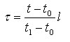
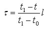

8.9.3.45 IfcReparametrisedCompositeCurveSegment
| Reparametrisiertes Segment einer zusammengesetzten Kurve |
The IfcReparametrisedCompositeCurveSegment is geometrically identical to a IfcCompositeCurveSegment
but with the additional capability of reparametrization.
NOTE Definition according to ISO/CD 10303-42:1992
The reparametrised composite curve segment is a special type of composite curve segment which provides the capability to
re-define its parametric length without changing its geometry.
Let l = ParamLength.
If t0 ≤ t ≤ t1 is the parameter range of
ParentCurve, the new parameter . for the reparametrised composite curve segment is given by the equation:

if SameSense = TRUE;
or by the equation:

if SameSense = FALSE;
NOTE Entity adapted from reparametrised_composite_curve_segment in ISO 10303-42.
HISTORY New entity in IFC4
XSD Specification:
<xs:element name="IfcReparametrisedCompositeCurveSegment" type="ifc:IfcReparametrisedCompositeCurveSegment" substitutionGroup="ifc:IfcCompositeCurveSegment" nillable="true"/>
<xs:complexType name="IfcReparametrisedCompositeCurveSegment">
<xs:complexContent>
<xs:extension base="ifc:IfcCompositeCurveSegment">
<xs:attribute name="ParamLength" type="ifc:IfcParameterValue" use="optional"/>
</xs:extension>
</xs:complexContent>
</xs:complexType>
EXPRESS Specification:
|
ENTITY IfcReparametrisedCompositeCurveSegment
|
|
|
| PositiveLengthParameter | : | ParamLength > 0.0; |
|
 EXPRESS-G diagram
EXPRESS-G diagram
Formal Propositions:
| PositiveLengthParameter | : |
The ParamLength shall be greater than zero.
|
Inheritance Graph:
|
ENTITY IfcReparametrisedCompositeCurveSegment
|
 Link to this page
Link to this page